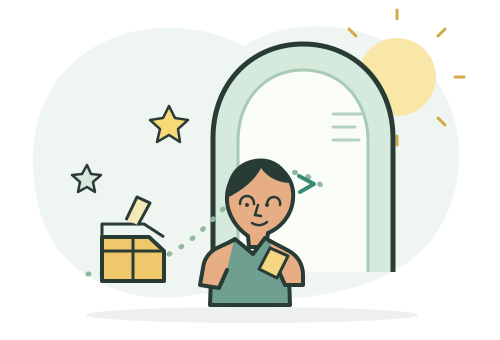

Ruta al futuro
Reúne ideas, apoyos y pasos hacia una meta.
Jugar en equipo →Herramientas para tus estudios, orientación vocacional y preparación Saber 11.

Elige un espacio y continúa a tu ritmo. Puedes volver aquí cuando quieras.
Define metas y crea pasos posibles para avanzar.
Crear mi ruta →Opciones de estudioExplora intereses, instituciones, programas y financiación.
Explorar opciones →Catálogo de CórdobaBusca entre 578 programas por municipio, institución, nivel y estado.
Abrir catálogo de carreras →Preparación Saber 11Practica por áreas y revisa explicaciones de tus respuestas.
Empezar práctica →Profesiones e ideasConoce sectores y prueba una idea para mejorar tu entorno.
Conocer y crear →Aprende haciendoPractica tecnología, seguridad y pensamiento crítico.
Ver retos →Práctica interactivaAprende vocabulario para hablar de estudio y futuro.
Empezar práctica →En equipoJuega, descifra pistas y explora el campus.
Elegir un juego →Material audiovisual relacionado con los módulos y campañas.
Elige un tema para consultar videos educativos en YouTube.
Los resultados vienen de YouTube. El docente debe revisar cada video antes de proyectarlo en el salón.
Actividades para resolver retos y explorar opciones en equipo.
Reúne ideas, apoyos y pasos hacia una meta.
Jugar en equipo →Resuelve retos y conoce áreas de estudio.
Explorar el campus →Interpreta pistas sobre metas y habilidades.
Descifrar mensajes →Historias breves para explorar caminos después del colegio.
“Me gustaban los computadores, pero no sabía qué estudiar. Hablé con un profesor, probé un curso corto y luego comparé programas técnicos y tecnológicos.”Una ruta posible · tecnología
“Quería ayudar a otras personas. Investigué opciones de salud, pregunté por requisitos y organicé un plan para prepararme mientras terminaba el colegio.”Una ruta posible · salud
“No tenía claro mi futuro. Empecé por una meta cercana: mejorar en una materia y conocer a alguien que trabajara en un área que me llamaba la atención.”Una ruta posible · explorar primero